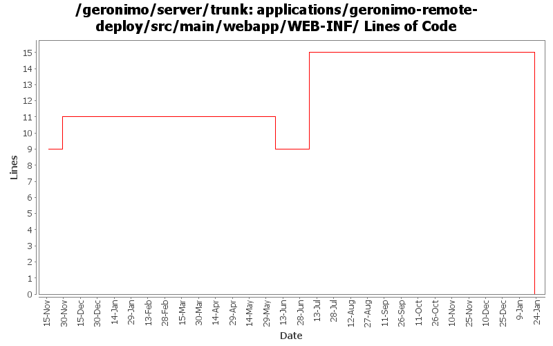

[root]/applications/geronimo-remote-deploy/src/main/webapp/WEB-INF

| Author | Changes | Lines of Code | Lines per Change |
|---|---|---|---|
| Totals | 11 (100.0%) | 20 (100.0%) | 1.8 |
| dwoods | 3 (27.3%) | 16 (80.0%) | 5.3 |
| vamsic007 | 1 (9.1%) | 3 (15.0%) | 3.0 |
| djencks | 1 (9.1%) | 1 (5.0%) | 1.0 |
| kevan | 4 (36.4%) | 0 (0.0%) | 0.0 |
| jdillon | 2 (18.2%) | 0 (0.0%) | 0.0 |
(GERONIMO-3747) Moved applications/* to plugins/*
0 lines of code changed in 2 files:
GERONIMO-3409 Several geronimo-web.xml files still use a 2.0-SNAPSHOT depend. One testsuite file has a hard-coded depend on a 2.0 module. Need to upgrade to geronimo.components vers=2.0.1, which is hard-coded to 2.0 in configs\client-transaction\pom.xml
1 lines of code changed in 1 file:
GERONIMO-2286 GERONIMO-1874 GERONIMO-3140 Adjust schema versions for schemas importing new schema versions
1 lines of code changed in 1 file:
GERONIMO-3189 Allow jsp/servlet examples to be deployed as WAR files on Tomcat or Jetty. Update to latest schemas and security config.
15 lines of code changed in 1 file:
GERONIMO-3209 Removing updates as it seems the jspc-maven-plugin-2.0-20070603.144720-1.jar creates invalid web.xml files on Windows, but works correctly on Linux with or w/o the <configuration> and fragment comments. Verified changes on WinXP and SLED10 by accessing the Admin Console and deploying the servlet-examples.
0 lines of code changed in 1 file:
GERONIMO-931 Rename administrative security realm
o Merging rev 480571 from branches\1.2
o Administrative security realm is renamed from "geronimo-properties-realm" to "geronimo-admin".
3 lines of code changed in 1 file:
GERONIMO-2537 Integrating patch supplied by Jay McHugh. Thanks Jaymvn -Ptools geronimo:start! Adds apache src header to files that were missing appropriate license information. This is everything except applications/console.
0 lines of code changed in 4 files: